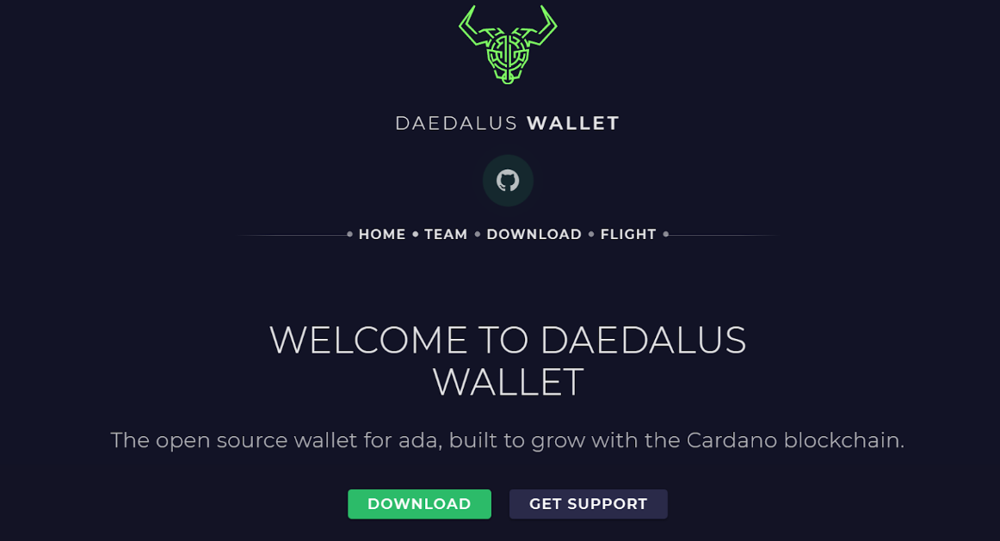
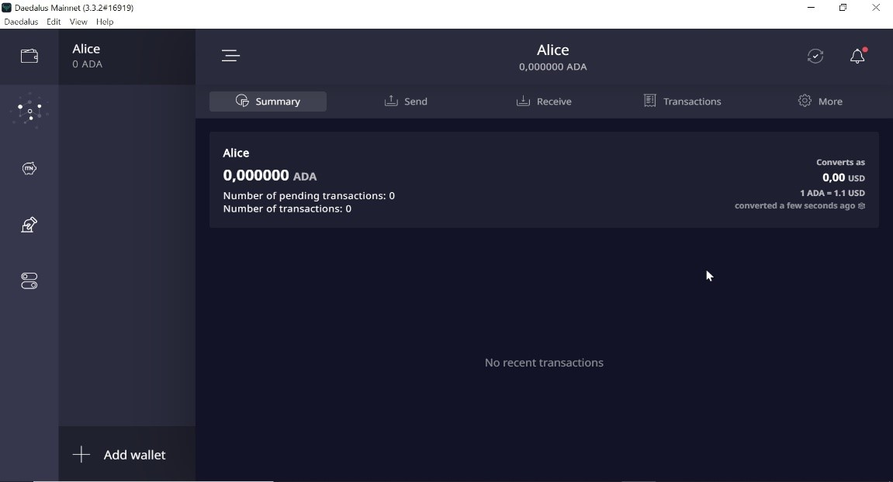
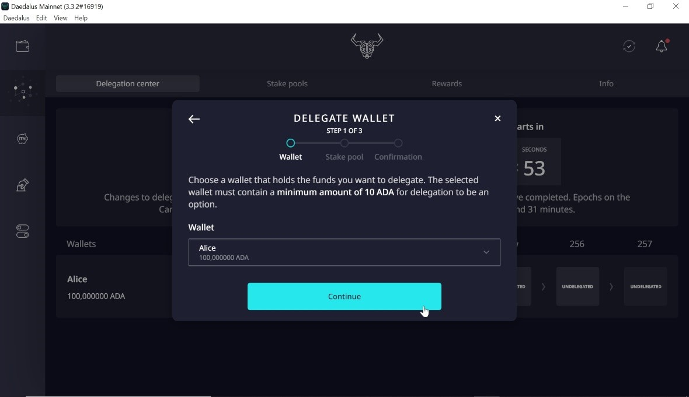
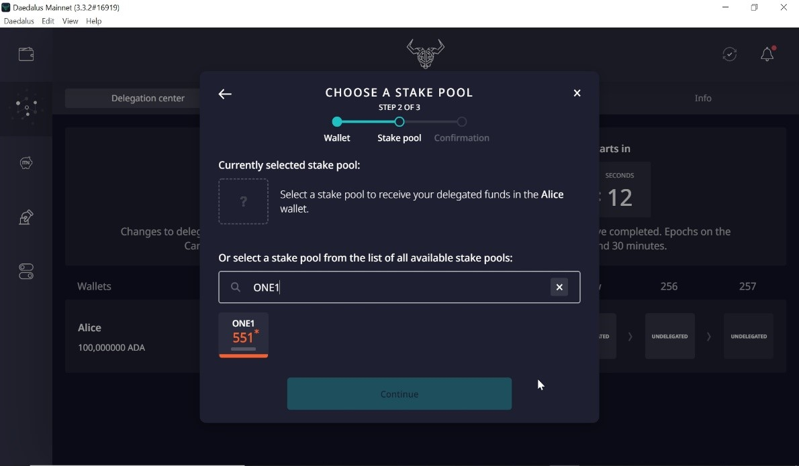

使用DAEDALUS錢包進行質押的步驟
下載Daedalus錢包。

建立一個帶有名稱的錢包並配置一個密碼（將其保存在安全的地方，因為每次進行交易時都將需要它。

您必須在紙上抄寫下24個單詞的清單，並放在安全的地方。此單詞列表是錢包恢復的清單，因此這是您電腦丟失，損壞，被盜或停止工作時恢復錢包的唯一方法。


之後按確認。

如果您的艾達幣 (ADA) 在幣安 (Binance)，則您需要先從幣安取出艾達幣 (ADA) 並將其轉移到電腦的本地錢包中，方法是從地址列表中複製接收地址（從列表中選擇一個），然後將其發送到Daedalus錢包。

當您在 Deadalus 錢包收到艾達幣時 (ADA), 您就可以開始質押了!

到質押中心進行質押，點擇 “質押”


選擇您要加入質押的錢包。

選擇 ONE1權益池
權益池代碼 : ONE1權益池名稱: ONE Pool
權益池 ID:



接著您需要輸入密碼以確認質押的動作。


最後您可以看見已經成功將您的艾達幣(ADA)質押給ONE1 權益池。